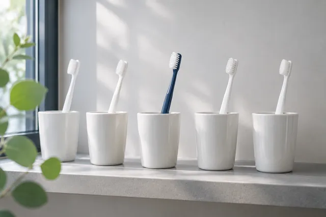

Блог о маркетинге стоматологий
Разбираем вопросы владельцев клиник и главных врачей: какая реклама работает, откуда приходят пациенты, что закон требует от рекламы и сайта и как не терять обращения после рекламы.
Реклама и привлечение пациентов
Какие каналы приводят пациентов, что писать в объявлениях и чем клиника отличается от соседних.
-

Реклама стоматологии: каналы, примеры, тексты
Какие каналы приводят пациентов, как написать объявление и куда его вести. С примерами текстов для имплантации, All-on-4 и брекетов.
-

Как привлечь пациентов в стоматологию
Пять шагов: от порядка в карточке и на сайте до рекламы, звонков и отзывов. Что делать новой клинике и клинике со стажем.
-

Акции для стоматологии
Какие акции приводят пациентов, какие только снижают цену и что закон требует от рекламы скидок.
-

УТП стоматологии
Целевая аудитория, разбор конкурентов и позиционирование. Примеры слабых и сильных формулировок.
-

Соцсети стоматологии
О чём писать посты, как составить контент-план и какие требования у рекламы в ВК.
Карты, отзывы и репутация
Что пациент видит, когда проверяет клинику перед записью.
Яндекс Бизнес для клиники
Карточка организации, товары и услуги, как формируется рейтинг и что даёт рекламная подписка.
Как отвечать на отзывы пациентов
Примеры ответов на положительные и отрицательные отзывы и что нельзя писать из-за врачебной тайны.
Закон и требования
Статьи о законах сверены с редакциями, которые действуют в ноябре 2026 года.
Закон о рекламе медицинских услуг
Лицензия, предупреждение о противопоказаниях, запрещённые формулировки, маркировка и штрафы. Проверочный список перед запуском.
Требования к сайту медицинской организации
Какие сведения должны быть на сайте клиники: лицензия, цены, врачи, персональные данные. Список для проверки.
Заявки, продажи и показатели
Что происходит с обращением после рекламы и как это считать.
CRM для стоматологии
Чем CRM отличается от МИС, что должно быть в системе и как её выбрать.
Скрипты для администратора стоматологии
Обязанности, скрипты для главных ситуаций, чек-лист смены и обучение.
Продажи в стоматологии
Этапы от звонка до принятого плана лечения, консультация и работа с возражениями.
Воронка пациентов и показатели
Какие цифры считать на каждом шаге, сквозная аналитика, коллтрекинг и LTV пациента.
Экономика стоматологии
Из чего складываются выручка и прибыль клиники и как их увеличить без роста рекламы.
Открытие клиники и бренд
Решения первых месяцев, которые потом помогают или мешают привлекать пациентов.
Как открыть стоматологию с нуля
Пошаговый план, лицензия, требования к помещению, статьи бюджета и маркетинг к открытию.
Название стоматологии
Пять подходов к названию, чего избегать и что проверить до заказа вывески.
Бренд стоматологии: логотип, стиль, вывеска
Из чего состоит бренд клиники и где проходит граница между вывеской и рекламой.
Заявка
Остался вопрос? Разберём на примере вашей клиники
Посмотрим сайт, карточку на Картах и рекламу, если она уже идёт. Скажем, с чего начать: с первого теста в Директе или с сайта и Карт.
- Первый тест в Директе: комиссия агентства 0 ₽, бюджет вы вносите Яндексу
- Сайт и Яндекс Карты: старт 80 000 ₽, сайт входит в эту сумму
- Если видим риски для запуска, скажем о них на разборе
Заявка ни к чему не обязывает. Ответим в рабочее время по Москве и назовём день, когда разбор будет готов.